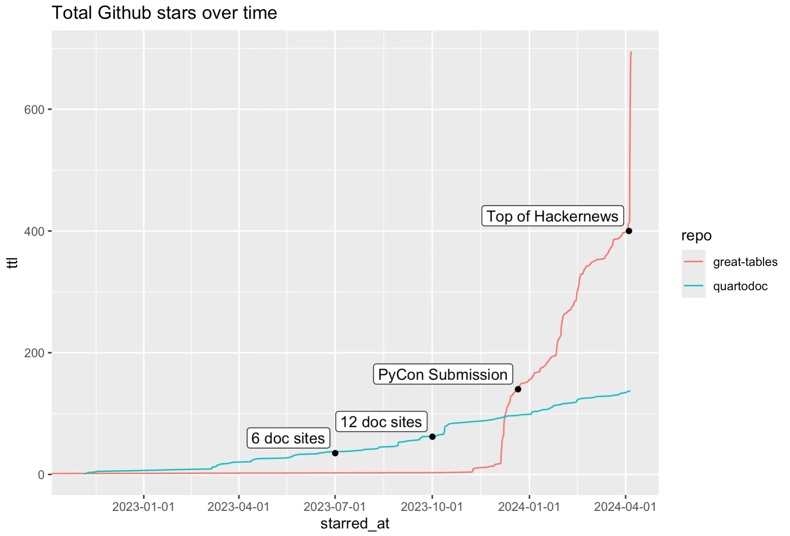
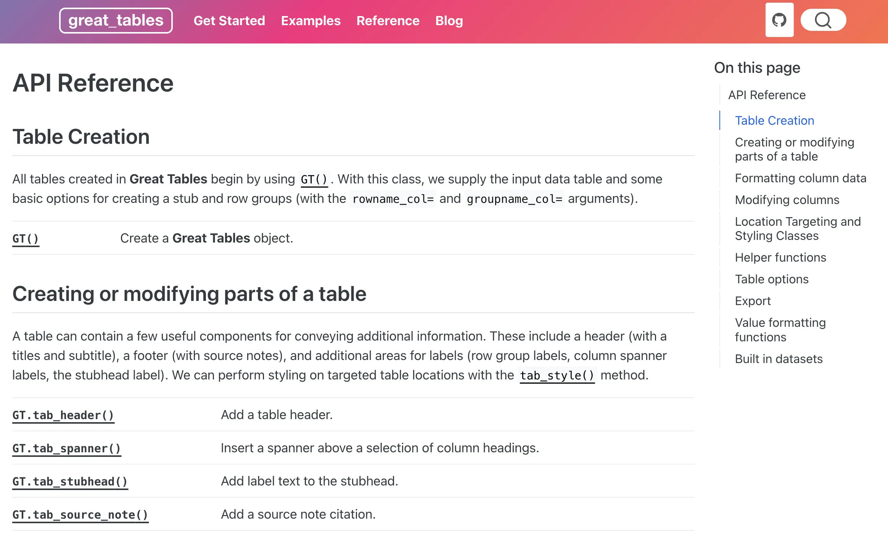
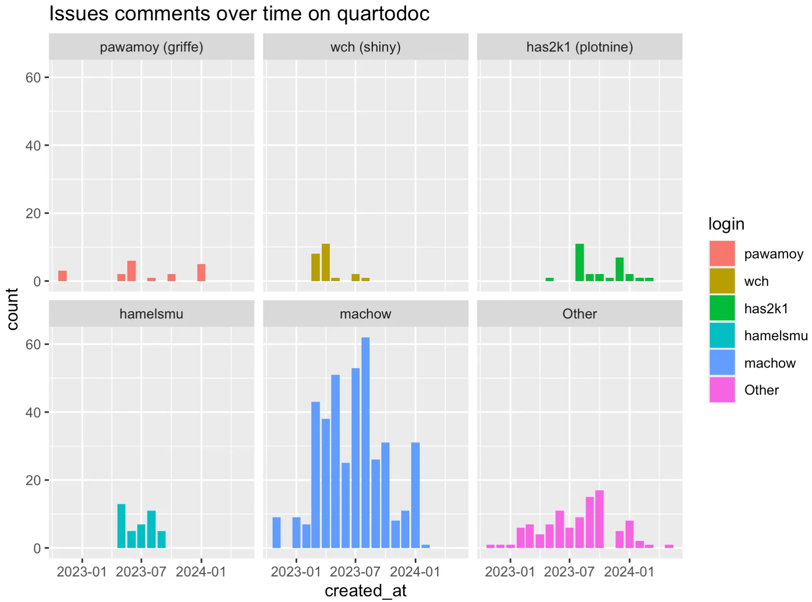
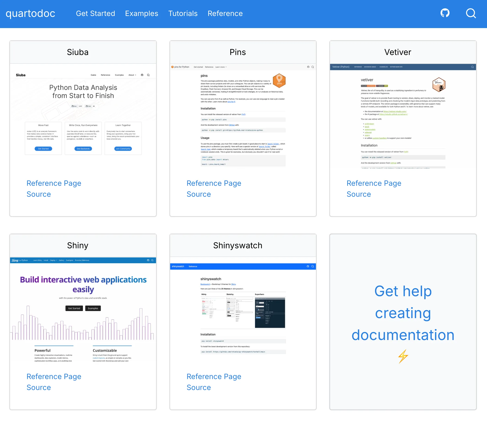
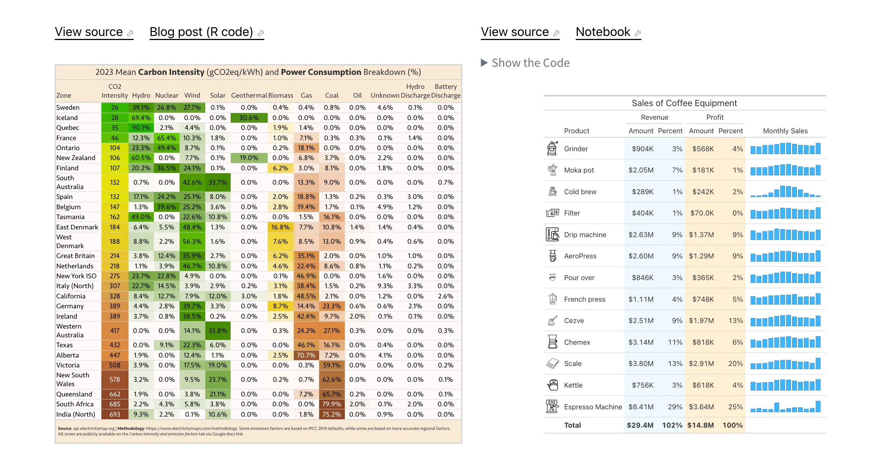
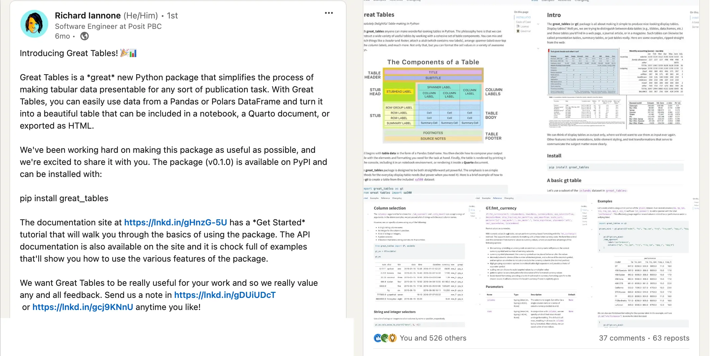
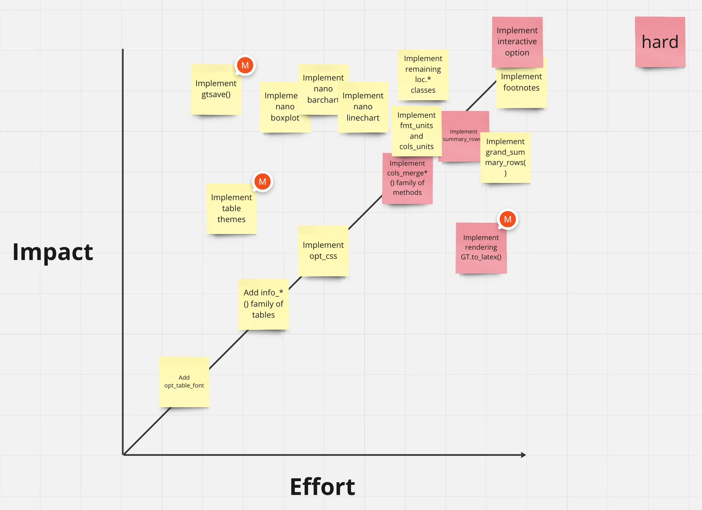
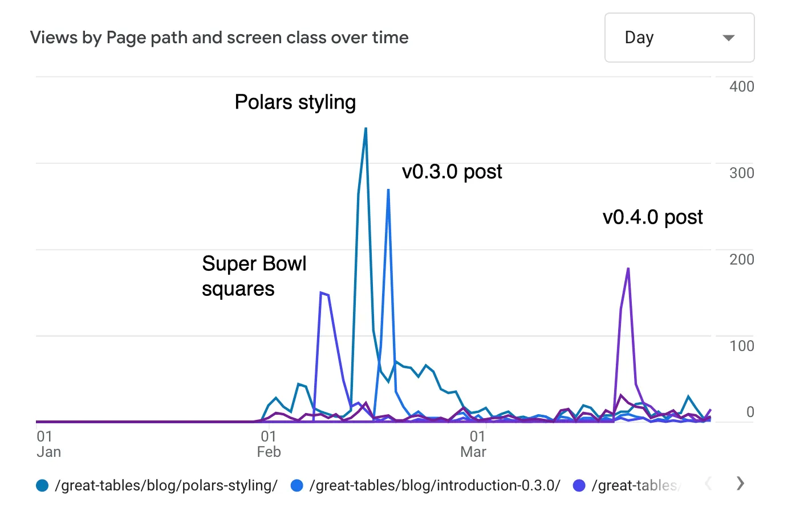
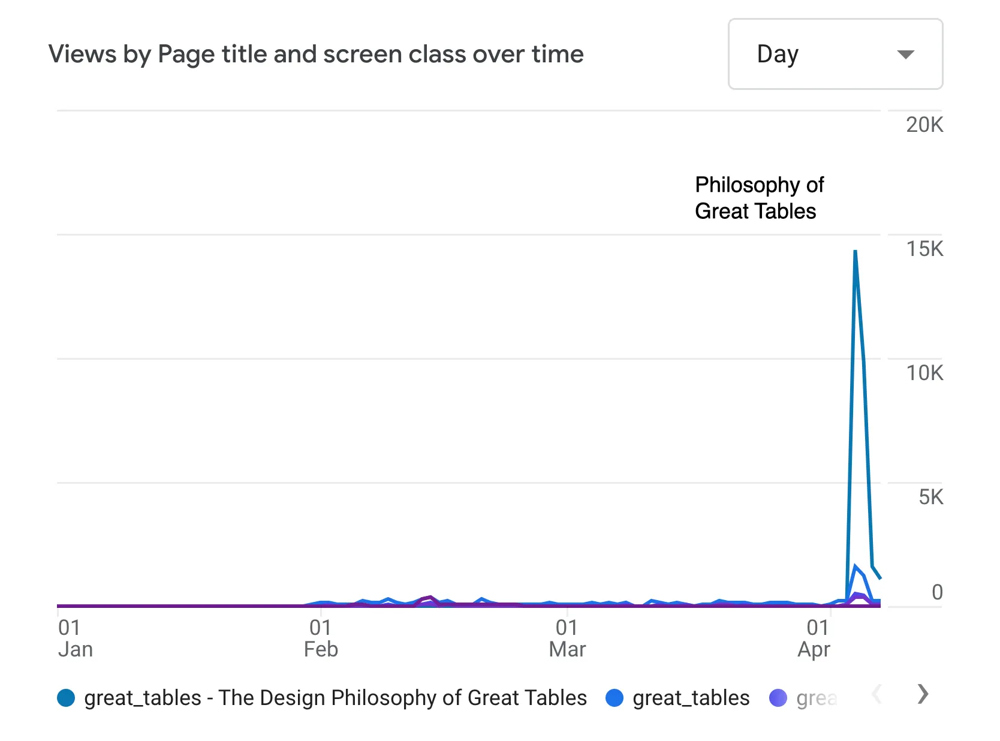

Recently, I wrapped up two years working on the Open Source team at Posit. This last year was largely spent getting two open source tools—quartodoc and Great Tables—off the ground.
The two packages have very different audiences.
In this blog post, I’ll review the big things I focused on each quarter, how they went, and what I learned in the process. The big focuses are shown in the graph below, which plots github stars over time, with big milestones marked at the end of each quarter.

In general, I tried to focus on nailing one big thing per quarter:
Note that we didn’t explicitly plan to be on top of hackernews, something that probably involved a lot of luck. Rather, we focused a lot on goals around adoption and communication, hoping that some Big Thing would surface.
There were other bits tucked in-between Big Things, like giving a talk at posit::conf called Siuba and duckdb: Analyzing Everything Everywhere All at Once. I’m also partial to this BYODF (Bring Your Own DataFrame) blog post.
I was fortunate to pair program a bunch with two people: Hamel Husain (quartodoc) and Rich Iannone (co-developer on Great Tables). It’s also worth mentioning Curtis Kephart, who helped us take communication on Great Tables to the next level.
For last year’s review, see One Year at RStudio. Or jump directly to the Great Tables section.
quartodoc is a tool that enables python libraries to generate an API Reference page. Basically, developers using quarto to document their python library can use quartodoc to create the API Reference page.
For example, here’s the Reference page of the library Great Tables:

Notice that the API Reference page is documenting key classes (like GT()) and methods (like GT.tab_header()).
The value of quartodoc is that it builds on top of quarto—a tool that makes it easy to create reports, slides, and websites. I needed quartodoc because documentation for my tools are 90% general website, and 10% API Reference. This means that quarto makes the main part easy, and quartodoc makes the last bit possible.
For quartodoc, I wanted to focus first on a minimum viable audience. My reasoning was that generating an API Reference has a surprising number of tricky steps. Also, everyone I talked to wanted different behaviors and documentation site structures.
Rather than seeking a general audience, I first needed early adopters—people who were willing to kick the tires, surface issues, and find better ways of doing things.
The rollout of quartodoc is nicely illustrated in issue comments over time, shown below.

The x-axis is the date, and the y-axis is number of comments. Each facet and color is a specific github user (with magenta in the lower right being all other commenters grouped together). Note three interesting dynamics:
Together these people reflect help from upstream packages, feedback from early adopters (shiny), and then feedback from big packages after a broad rollout (plotnine).
For Q2 we focused on getting 6 packages using quartodoc. This involved two parts:

Rounding out support. While we had deployed the shiny API docs in the previous quarter, there were a ton of extra cases to consider. It’s worth noting two members of the shiny team opened 42 issues on quartodoc as we worked on shiny’s API Reference. This was the best early adopter outcome I could hope for 😅.
The two biggest pieces were reducing the build time and supporting interlinks (automatic linking between API entries).
Supporting new packages. I also worked on migrating a few more documentation sites to quartodoc—including pins (which I maintained), and shinyswatch (which the shiny team maintained).
At the end of this quarter I filmed a 10 minute screencast on getting started with quartodoc, and then headed to SciPy’s annual conference. There, I ran into the ibis team, who ended up switching to quartodoc over the next quarter.
ibis docs. While at SciPy, I ended up spending a good chuck of time with the ibis team. Since their tool is similar to siuba, in that it translates to SQL, we have a ton of shared interests. They mentioned not liking how hard it is to execute python code on their doc site, which used mkdocs. While sitting with them at Allen Downey’s talk, I attempted a port-ibis-docs-to-quartodoc speedrun, which went surprisingly okay.
After the conference, I put up two quick resources:
In the end, the ibis team worked incredibly fast. I mean scary fast. I mean that what I thought might get chipped away at over a month or more was done in a week. Dang y’all!
plotnine docs. Similar to working with ibis, I also put up a demo site and screencast for plotnine. Plotnine’s author, Hassan, ended up opening a ton of issues on quartodoc, upstream on griffe, and even contributed useful changes to quartodoc.
For the next two quarters I shifted focus to Great Tables, a python library for the display of tables. The easiest way to get a feel for what Great Tables does is to check out the Examples page. Here are two entries:

Notice that the tables look very different from normal DataFrame outputs. They’re structured, formatted, and styled for presentation. Here, the most important piece is conveying information to an audience (e.g. your boss; people in your field).
The magic behind Great Tables is a developer named Rich Iannone. He’s gone surprisingly deep on two facets of tables:
What stuck out to me most though was that his R library for table styling (gt) had a surprisingly dedicated following. For example, Tom Mock uses gt in his example laden post “10+ Guidelines for Better Tables in R”. gt established a powerful grammar for communicating table display.
When planning my next six months, I wrote this pitch for putting time on Great Tables:
Normally, when porting a tool from R to python there are a dozen alternatives to compete with. As a result, it can be hard turning need into demand. I think getting gt-python out is a no-brainer: gt fans were crawling all over themselves at posit::conf() to meet Rich, and there’s no python alternative.
In the following sections I’ll discuss how we approached each quarter, which loosely corresponded to submitting to PyCon, and accidentally shooting a 3,000 word blog post to the top of hacker news.
In my first few months developing Great Tables with Rich, I focused on a quick architecture review of the existing code, while we worked towards submitting a talk to PyCon US 2024. The key challenge with refactoring was avoiding too much, but also ensuring we would not paint ourselves into a corner before submitting.
In the following sections I’ll discuss how a 10 minute architecture review screencast, and design exercises helped us refactor and submit to PyCon.
Architecture review and quick refactor. Before kicking off general Great Tables plans, I spent 2 weeks reviewing an existing python prototype for Great Tables Rich had been chipping away at.
Two things stood out in the prototype:
Moreover, the data and actions were combined in a big class called GT, which ended up inheriting from 15 parent classes (1 per data class, with actions on the data class). In general, inheriting from 15 classes is often a sign you should use the bridge pattern—which is mostly what we ended up doing.
Overall, the refactor gave us two things:
Submitting to pycon. With the refactor out of the way, we set a goal of submitting a talk to PyCon US 2024. Our reasoning was as follows:
In order to make the most of our time, we made a User Story Map that segmented our work into 3 slices (which we hoped we could nail in 2-week sprints). We identified folks within Posit who could be early users.
By December 4th we were ready to roll out Great Tables to the world, with a v0.1.0 release and LinkedIn post!

The post received 526 reactions on LinkedIn, which seemed like a strong signal people wanted Rich’s freaky table brain styling tables for display in python.
After that, it was time to submit to PyCon. We each wrote up separate drafts, and then reviewed them together. Rich came up with the title “Making Beautiful, Publication Quality Tables in Python is Possible in 2024”, and we used his draft as the starting point!
We found out we had been accepted to PyCon in early February, which kicked off a flurry of activity. The conference wasn’t until May, which gave us two 6-week planning cycles.
The first cycle finished at the end of Q1, so I’ll focus only on it. We focused on two areas:
Feature prioritization. Using an impact / effort matrix exposed a lot of low hanging fruit for Great Tables. In order to create the matrix, we wrote out big issues on github with the label epic. These are issues that essentially unlock something fairly big and useful (e.g. there might be 100 issues on a repo, and only 10 to 20 epics).
Then, I created sticky notes for each one in Miro, so Rich could move them onto the Impact vs Effort graph (shown below).

Note that more impactful epics are higher, and more effortful are to the right. There are two aspects of this graph I find useful. First, low effort tasks can often be used as filler between bigger work. Second, things above the line reflect epics where there’s outsized impact, relative to effort involved.
For example, Rich reckoned implementing ggsave() as low effort and high impact (i.e. low hanging fruit). We ended up coloring especially hard implementations in red. A surprising piece was that Rich placed rendering to latex as a relatively high effort, low impact activity (bottom right). He knew a small group of people benefited deeply from it, but we suspected it should come after PyCon.
Communication. We wanted equal focus between development and communication around Great Tables this quarter. To this end, we linked up with one of our favorite Posit folks, Curtis Kephart, and planned out a content schedule. This contained posts we committed to writing, people he planned to reach out to, and desired outcomes like expanding the Examples gallery.
Overall, I found it super helpful! We ended up writing 6 posts on the Great Tables blog over the quarter, and chatting with a bunch of folks curious about our tool. Below are views over time for the 4 most successful posts of the quarter.

Note that there were largely three kinds of posts:
However, the most surprising result came when Rich took up the call from Curtis to lay out the Design Philosophy of Great Tables. A task Curtis guessed would be quick, but that Rich turned into a 2 week long writing adventure, that shot to the top of Hacker News on April 4th:

The Design Philosophy of Great Tables ended up a 3,000+ word epic on the 10,000+ year history of tables—from tablets used at the Temple of Enlil at Nippur, to the midcentury tables featured in the US Census Manual of Table Display, and on the spreadsheet-esque tables of VisiCalc. Rich pulled the content from some freaky-table-scholar part of his brain, and gave me permission to aggressively edit. It took roughly 2 weeks of regular pairing on writing and edits.
Over the past year (around Apr 2023 - Apr 2024), I focused on two open source tools: quartodoc and Great Tables. With quartodoc we worked on getting the first dozen libraries to adopt it, while with Great Tables we went for broader adoption.
For the next year—in addition to maintaining Great Tables—I’m looking to focus more on strategies behind writing good documentation. This is inspired by my experience working on guides the year before, and on the Great Tables guide this year. I also want to do some more dabbling on tools to make data analysis nice in Polars (e.g. by converting Polars code to SQL, with tools like narwhals, etc..).
We’ll see!
Follow on Twitter | Hucore theme & Hugo ♥